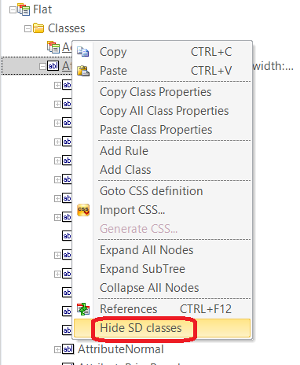
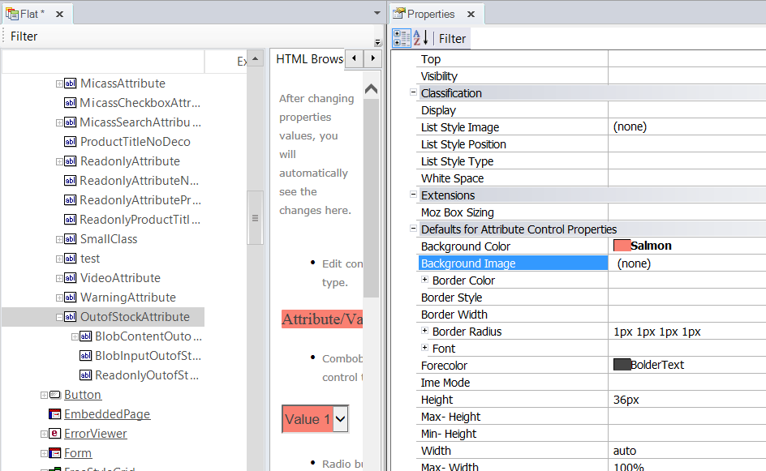

Theme menu option: Show / Hide Classes
Show SD Classes or Show Web Classes are options of the Theme menu, as are Hide SD and Hide Web Classes. The purpose of these options is to display the classes which belong to any Theme for Smart Devices object (X Evolution 3) while the user is editing a Web Theme object and vice versa.  It's useful when the user wants to associate the same class with a control of an SD panel or a Web object. Conceptually, the class can be the same -for example, "OutofStockAttribute"- but the properties are different depending on the platform. ExampleIn this example, the class OutofStockAttribute is defined in the Flat Theme for a Web application.  If the same class name is to be used for an SD app, the Show Web Classes option shows all the web classes in the Web Themes, including the one we're interested in: OutofStockAttribute. There, the user can change the settings according to the desired design.
|

| Backlinks |
| Theme Editor class menu options |